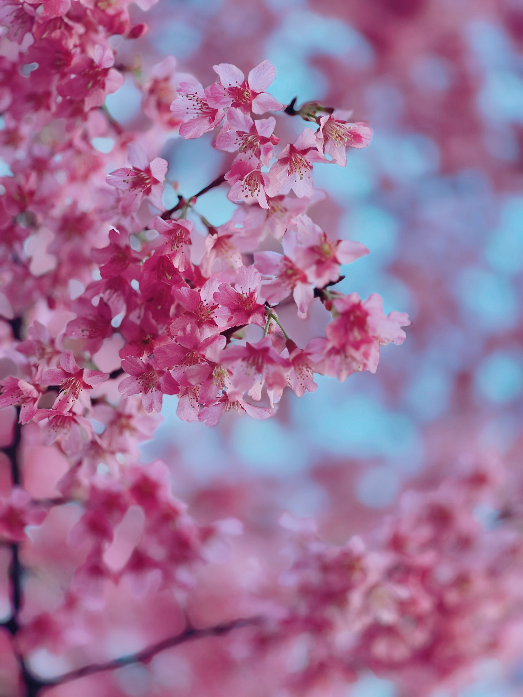

さくら春 / SPRING
桜色
SAKURA-IRO
#F4B4C0
満開の桜の花びらを思わせる、ほのかに赤みを帯びた淡い色。
SEASON 01 / SPRING
ほころぶ花と、芽吹く草木。春の光の中に現れる、やわらかく生命力のある色を集めました。
01
SPRING COLLECTION

さくら春 / SPRING
SAKURA-IRO
#F4B4C0
満開の桜の花びらを思わせる、ほのかに赤みを帯びた淡い色。
春 / SPRING
WAKAKUSA-IRO
#A8C97F
春に芽吹いたばかりの草のような、明るくみずみずしい黄緑色。